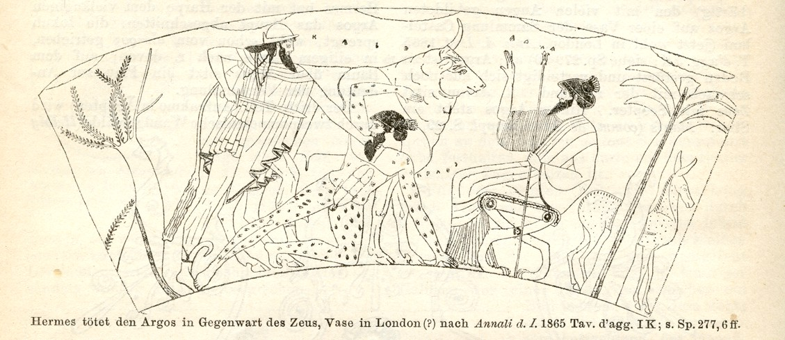

Welcome to the Inholland teacher tool

Study data:
[Explore]
Module ID
Current session
Patient data:
[View]
[Explore]
Patient ID
Test observer data:
Student ID
Download
case data
for {{observer}}
Upload
gold standard
rtstruct for case {{patient}} (dcm):
Name
Number of gold standards: {{ countgs }}
{{ item.name }}
Upload
software
update:
Server info for {{info}}:
Number of patients in module: {{ countcases }}
Data upload:
Upload
images
for case {{patient}} (zip):
Upload
template
rtstruct for case {{patient}} (dcm):
Patient info for {{patient}}:
Number of image slices: {{ countslices }}
Number of templates: {{ counttemplate }}
Download
UIDs for
{{patient}}
Upload
UIDs
for {{patient}}:
Upload
observer rtstruct
(dcm):
[View]
Observer data in system for {{patient}}:
Number of observers: {{ countobservers }}
{{ item.name }}